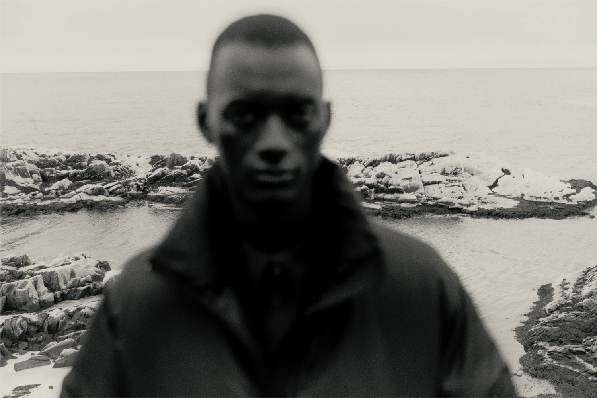
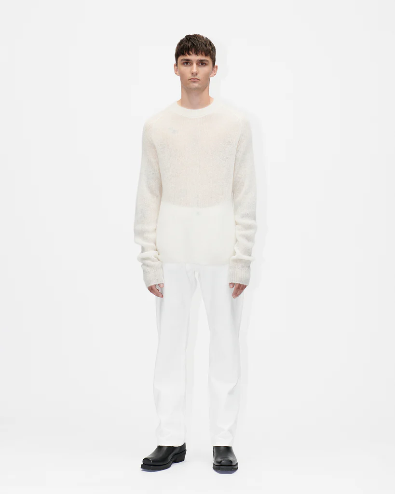
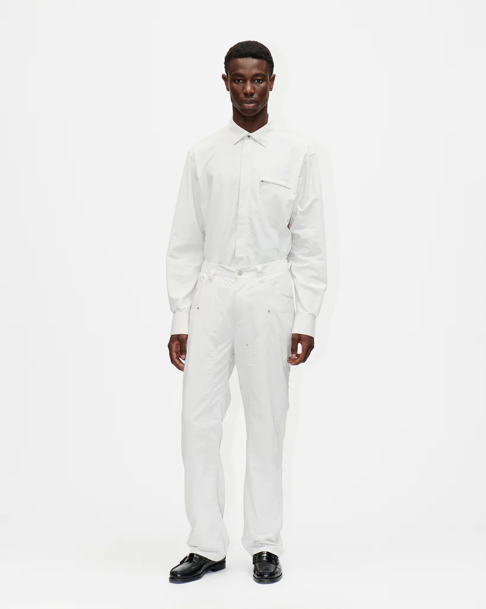
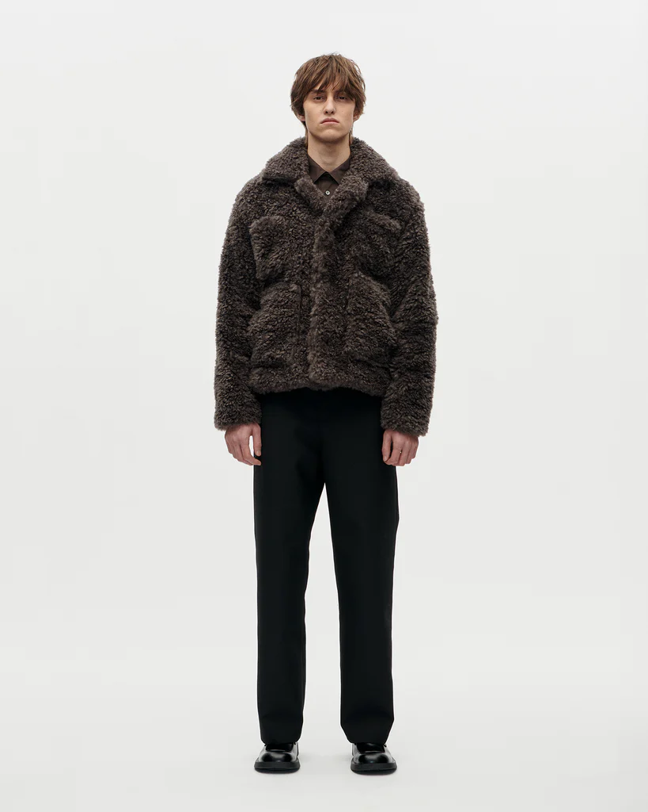
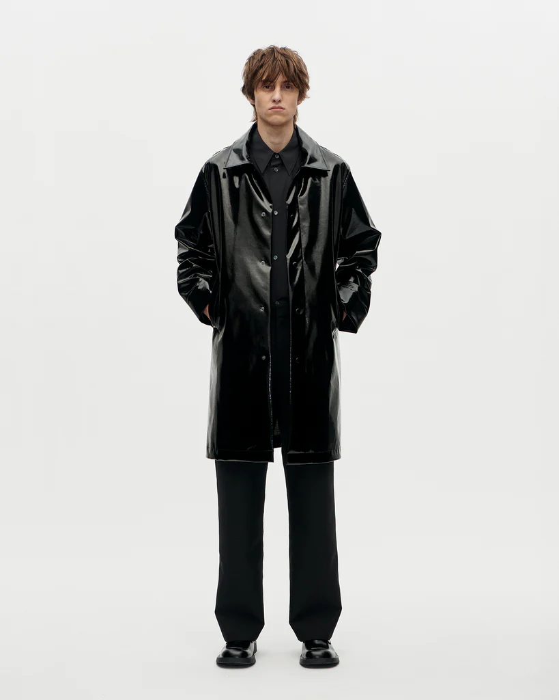

01
02
Berner Kühl
55.6761° N, 12.5683° E






Feature
Officer Crew Lana
For Pre Autumn 2024 we
are introducing a new knit to our base range. A 7 gg crew neck
knit in an 2 x 2 rib extra fine merino wool. Made with thumb
holes in the extended sleeves for comfort during those cold
summer nights.
Made in a subdued rock color as well
as a pitch black, this knit will serve you all year round.
For AW24 we will be launch in a new color option. Stay
tuned!